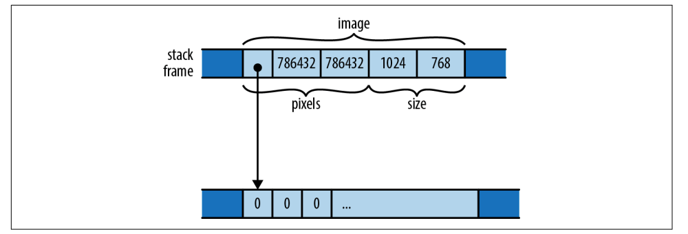

【Rust】结构体
Rust 中也有结构体，类似 C/C++ 中的结构体，python 中的 class 以及 javascript 中的对象。Rust 中除了常规的结构体之外，还有 tuple 结构体，单元结构体。
结构体
Rust 中约定包括结构体在内的所有类型都采用驼峰法命名，并且首字母大写，而方法和字段采用蛇形命名，即 _ 连接小写单词。例如：
1 | /// A rectangle of eight-bit grayscale pixels. |
结构体初始化：
1 | let width = 1024; |
如果局部变量或者函数参数和字段名称同名，还可以省略字段名称，例如：
1 | fn new_map(size: (usize, usize), pixels: Vec<u8>) -> GrayscaleMap { |
字段访问采用 . 运算符：
1 | assert_eq!(image.size, (1024, 576)); |
结构体默认只能在当前模块和子模块中使用，如果想要导出结构体需要使用 pub 标识，字段也是同样的道理，如果字段都是私有的，那么只能使用类似 Vec::new 的构造方法来初始化字段：
1 | /// A rectangle of eight-bit grayscale pixels. |
我们还可以使用相同类型的结构变量去初始化另外一个，使用 .. 运算符，自动填充未显示赋值的字段：
1 |
|
p2 除了 name 字段是显示赋值的，其他两个字段都是来源于 p1，这段代码运行之后将输出：
p1: Person { name: "michael", age: 28, sex: '男' }, pw: Person { name: "skye", age: 28, sex: '男' }
tuple 结构体
之所以叫tuple结构体是因为它长得像，例如：
1 | struct Bounds(usize, usize); |
构造tuple结构体就像构造 tuple，只是需要写一个类型：
1 | let image_bounds = Bounds(1024, 768); |
就连字段访问方式也是一样的：
1 | assert_eq!(image_bounds.0 * image_bounds.1, 786432); |
内部字段也可以设置访问权限，即是否导出：
1 | pub struct Bounds(pub usize, pub usize); |
表达式 Bounds(1024, 768) 看起来像一个函数调用，实际上它就是，定义类型的同时也隐式定义了一个函数：
1 | fn Bounds(elem0: usize, elem1: usize) -> Bounds { ... } |
tuple 结构体和常规的结构体基本上是类似的，使用哪个取决于易读性和简洁性。
Unit 结构体
Unit 结构体 没有字段：
1 | struct Onesuch; |
这种类型的值不占用内存，很像单元类型()，只是它有自己的类型名称，但它的值只能有一个：
1 | let o = Onesuch; |
内存布局
常规结构体和 tuple 结构体在内存中的是一样的，它们都包含一系列的值，可能同类型也可能混合类型，例如我们上面定义的结构体：
1 | struct GrayscaleMap { |
与 C 和 C++ 不同，Rust 没有就如何在内存中对结构的字段或元素进行排序做出具体承诺，Rust 可能为了内存对齐进行调整字段顺序，所以下图仅显示了一种可能的布局：

但是，Rust 确实承诺将字段的值直接存储在结构的内存块中。 JavaScript、Python 和 Java 会将 pixels 和 size 值分别放在它们自己的堆分配块中，并让 GrayscaleMap 的字段指向它们，而 Rust 将 pixels 和 size 直接嵌入到 GrayscaleMap 值中， 只有 pixels 向量拥有的堆分配缓冲区保留在其自己的块中。
您可以使用 #[repr(C)] 属性要求 Rust 以与 C 和 C++ 兼容的方式布局结构体。
实例方法
Rust 方法不像在 C，Go 或者 Java 中那样出现在结构体定义中，而是出现在单独的 impl 块中。一个 impl 块只是 fn 定义的集合，每个定义都成为块顶部命名的结构类型上的一个方法。在这里，例如，我们定义一个 public struct Queue，然后给它两个 public 方法，push 和 pop：
1 |
|
定义在 impl 块中的称之为关联函数，因为和特定的类型有关，相反，没有定义在 impl 中称之为自由函数。
Rust 将调用它的值作为第一个参数传递给方法，该参数必须具有特殊名称 self，self 的类型可以省略，所以 self，&self 或者 &mut self 实际上是 self: Queue， self: &Queue， 或者 self: &mut Queue 的简写。
在我们的示例中，push 和 pop 在内部使用 self 访问内部成员，这与 C++ 和 Java 不同，this 对象的成员在方法中直接可见，而 Rust 必须要使用 self 来访问。
这里由于 push 和 pop 都需要修改 Queue，所以它们的取值都是 &mut self，但是我们调用时没必要显示借用可变引用，Rust 会为我们隐式进行转换，例如，q.push 等价于 (&mut q).push()：
1 | let mut q = Queue { older: Vec::new(), younger: Vec::new() }; |
如果不需要改变 self，那我们可以只获取一个共享引用：
1 | impl Queue { |
如果想获取所有权，那么使用 self：
1 | impl Queue { |
智能指针
智能指针诸如 Box<T>，Rc<T> 以及 Arc<T> 都可以调用 self 类型的方法，例如：
1 | let mut bq = Box::new(Queue::new()); |
我们也可以将方法的第一个参数类型改成 Rc<Self>，下面的例子中，我们将一个节点添加到父节点中，但是保留 shared_node 的所有权，以在 main 函数中仍然可用：
1 |
|
将 Rc<Self> 作为方法的参数，这意味着：
-
我们可以转移
Rc<Self>的所有权，例如，上面的例子我们可以直接调用：shared_node.append_to(&mut parent);，只是这样，父函数中shared_node就不可用了； -
如果它需要保留
Rc的所有权，可以像上面这样通过增加引用计数的方式实现；
类型方法
impl 中定义的函数也可以不将 self 作为它们的参数，这个时候称之为类型方法，就像 Vec::new，经常被用于去实现构造函数，例如：
1 | impl Queue { |
在 Rust 中，将构造函数命名为 new 是惯例，我们已经看到了 Vec::new、Box::new、HashMap::new 等，但是new这个名字并没有什么特别之处，它不是关键字，并且类型通常具有其他关联的函数作为构造函数，例如 Vec::with_capacity。
尽管可以为单个类型拥有许多单独的 impl 块，但它们必须都位于定义该类型的同一个 crate 中。
关联常量
顾名思义，关联的 const 是常量值，它们通常用于指定类型的常用值。例如，可以定义一个用于线性代数的二维向量以及相关的单位向量：
1 | pub struct Vector2 { |
与关联函数非常相似，它们通过命名它们关联的类型来访问：
1 | let scaled = Vector2::UNIT.scaled_by(2.0); |
关联的 const 也不必与它关联的类型具有相同的类型; 我们可以使用此功能为类型添加 ID 或名称：
1 | impl Vector2 { |
泛型结构体
Rust 支持泛型，泛型可以用于处理逻辑相同，但类型不同的场景，例如，我们可以对之前的 Queue 结构体修改：
1 | pub struct Queue<T> { |
可以将 Queue<T> 中的 <T> 解读为 对于任何元素类型 T...，所以这个定义解读为：对于任何类型 T，一个 Queue<T> 是两个 Vec<T> 类型的字段。例如，在 Queue<String> 中，T 是 String，因此 older 和 younger 的类型为 Vec<String>。在 Queue<char> 中，T 是 char，事实上，Vec 本身就是一个泛型结构体。
在泛型结构定义中，<> 中使用的类型名称称为类型参数。泛型结构的 impl 块如下所示：
1 | impl<T> Queue<T> { |
可以将 impl<T> Queue<T> 解读为 对于任何类型的 T，以下是 Queue<T> 上可用的一些关联函数。然后，可以使用类型参数 T 作为关联函数定义中的类型。
语法可能看起来有点多余，但 impl<T> 清楚地表明 impl 块涵盖任何类型 T，这将它与为一种特定类型的 Queue 编写的 impl 块区分开来，例如：
1 | impl Queue<f64> { |
这里的意思是，这有一些专门为 Queue<f64> 实现的关联函数，其他类型不可用。
我们在前面的代码中使用了 Rust 的 self 参数简写，因为到处写出 Queue<T> 也很啰嗦，所以有了另一种简写，每个 impl 块，无论是否通用，都将特殊类型参数 Self 定义为我们要添加方法的任何类型。在前面的代码中，Self 是 Queue<T>，所以我们可以进一步简化 Queue::new 的定义：
1 | pub fn new() -> Self { |
在 new 函数中，我们的构造表达式没有任何类型，只写了 Queue{ ... }，是因为 Rust 可以函数的签名推断，因为这里只有一种类型 Self，即 Queue<T> 用于函数的返回值。我们也可以使用 Self { ... } 代替上面的 Queue{ ... }。
对于关联函数的调用，我们需要使用 tuborfish 运算符：::<>，例如：
1 | let mut q = Queue::<char>::new(); |
但是实际应用中，经常交由 Rust 进行推断：
1 | let mut q = Queue::new(); |
结构体生命周期参数
如果结构体类型包含引用，则必须声明这些引用的生命周期。例如：
1 | struct Extrema<'elt> { |
struct Extrema<'elt> 意味着，给定任何特定的生命周期 'elt，你可以创建一个 Extrema<'elt> 来保存具有该生命周期的引用。这是一个扫描切片并返回最大最小值的函数：
1 | fn find_extrema<'s>(slice: &'s [i32]) -> Extrema<'s> { |
在这里，由于 find_extrema 借用了 slice 的元素，它具有生命周期 's，所以我们返回的 Extrema 结构体也使用 's 作为其引用的生命周期。Rust 总是会推断函数调用的生命周期参数，因此对 find_extrema 的调用不需要提及它们：
1 | let a = [0, -3, 0, 15, 48]; |
因为返回类型与参数使用相同的生命周期是很常见的，所以当有一个明显的候选者时，Rust 允许我们省略生命周期。我们也可以这样写 find_extrema 的签名，但含义不变：
1 | fn find_extrema(slice: &[i32]) -> Extrema { |
常用 Trait 派生
通常我们自己的定义的结构体是不支持 {:?} 打印，比较，深拷贝的，如果我们像这样做，就得实现 Copy，Debug，以及 PartialEq，但如果每一次都手动实现，就显得有点痛苦了，好在 Rust 提供了 #[derive] 属性来自动帮我们实现：
1 |
|
如果结构体的每个字段都实现了该 trait，则这些 trait 中的每一个都可以为结构体自动实现。我们可以要求 Rust 为 Point 派生 PartialEq，因为它的两个字段都是 f64 类型，它已经实现了 PartialEq。
内部可变性
内部可变性，简单说就是我们想改变一个不可变的数据，常规做法肯定是行不通的，但是在我们引入两个：Cell<T> 和 RefCell<T> 之后就能解决了。
我们来看一个例子，假设我们要做一个数据采集系统，采集不同类型的站点，但是它们都有一个共同的配置以及某些文件操作句柄用于处理日志等，我们在程序启动的时候，可能就初始化它了：
1 | pub struct SpiderRobot { |
然后，假设我们在采集某个类型的系统时，拥有下面这样的结构体，包含了公共的配置：
1 | use std::rc::Rc; |
我们知道 Rc 是一个通过计数实现的只读智能指针，但是我们想在 SpiderRobot 中保留一个文件句柄，它是标准的 File 类型，用来写日志，不过有个问题是，File 必须是 Muteable，因为它所有的方法都要求一个可变引用。
这种情况非常常见，这叫做内部可变性，Rust 为此专门提供了几种类型来解决问题，我们这里先介绍 Cell<T> 和 RefCell<T>。
Cell<T>
Cell<T> 是一个结构体，它包含一个类型为 T 的私有字段。Cell 的唯一特殊之处在于，即使 Cell 本身没有 mut 访问权限，您也可以获取和设置字段：
-
Cell::new(value)：创建新的Cell，并且将给定的value移动到里面去； -
cell.get()： 返回Cell中value的副本； -
cell.set(value)：将给定的value存储到cell中，丢掉原先的值，这个方法不许cell可变，它的实现如下：1
2
3
4pub fn set(&self, val: T) {
let old = self.replace(val);
drop(old);
}当然，这对于名为
set的方法来说是不寻常的。因为从之前的学习来说，如果我们想要对数据进行更改，我们需要mut访问。但出于同样的原因，这一不寻常的细节是Cell的全部意义所在，具体背景可参考Cell的源代码实现。
通过，Cell 我们可以在 SpiderRobot 中统计错误数量：
1 | use std::cell::Cell; |
然后，即使 SpiderRobot 的非 mut 方法也可以使用 .get() 和 .set() 方法访问该 u32：
1 | impl SpiderRobot { |
但是 Cell 不能让我们调用值的 mut 方法，因为 get 返回的是一个副本，所以它仅仅只能用于实现了 Copy 的类型。
RefCell<T>
RefCell<T> 和 Cell<T> 不同的是，他可以返回内部值得引用：
-
RefCell::new(value)：创建新的RefCell； -
ref_cell.borrow()：返回一个Ref<T>，这本质上只是对存储在 ref_cell 中的值的共享引用； -
ref_cell.borrow_mut()：返回RefMut<T>，本质上是对ref_cell中值的可变引用。 如果该值已被借用，则此方法会panic； -
ref_cell.try_borrow(), ref_cell.try_borrow_mut()：很像borrow和borrow_mut，但是返回Result。所以当值已经被借用之后，不会panic，而是返回Err。
只有当你试图打破 mut 引用是独占引用的 Rust 规则时，这两个借用方法才会 panic。例如，这会 panic：
1 | use std::cell::RefCell; |
回归正途
现在，我们使用 RefCell<T> 来完成我们打印日志的功能：
1 | pub struct SpiderRobot { |
变量 file 的类型为 RefMut<File>，它可以像对 File 的可变引用一样使用。
Cell 易于使用， 必须调用 .get() 和 .set() 或 .borrow() 和 .borrow_mut() 有点尴尬，但这只是我们为违反规则而付出的代价。 另一个缺点不太明显但更严重：Cell 以及包含它们的任何类型都不是线程安全的，因此，Rust 不允许多个线程同时访问它们。这种情况应该使用 Mutex。